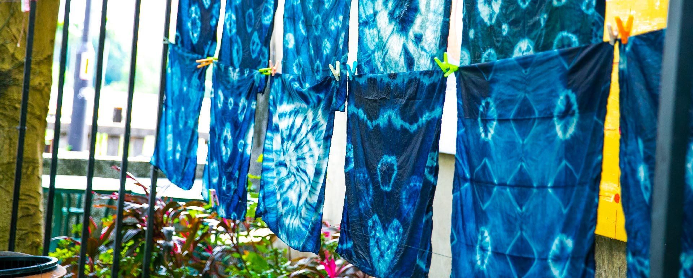

藍染的歷史 藍染基礎技法 藍染步驟 藍染影片介紹 染色坊位置
中華文化淵源流長博大精深，《荀子.‧勸學篇》謂「青取之於藍，而勝於藍」，係古代文士 目賭「藍草」不可思議的藍色素轉化過程，以及經由藍染缸染出更為出色的青碧色彩，所 發出「青取之於藍，而勝於藍」的謂嘆，流傳成為形容事物技能更勝一籌的世間至理名言。 「藍」為染「青」之草，「青」是藍草製靛染色布帛之色彩名稱。此外《詩經‧小雅‧采綠》 提到「終朝採藍‧不盈一襜」，也是表示「藍」為染色之草。 中國自古以來使用最普遍的染料就是「藍靛」。其為經由藍草的栽種製取成為藍靛;從商周 到秦漢，染藍的技術已相當成熟，尤其從漢代到清末，藍靛的生產、使用一直是民間產業 需求量最大的材料。明代宋應星所著《天工開物》對藍草的種類、製靛與染色做了全面性 的闡釋，書中指出:「凡靛入缸，必用稻灰水先和，每日手執竹棍攪動，不可計數。其最佳 者曰標缸。」 中國歷代官方設有織染機構與訂定服色制度。唐代織染署有包括「青色」六種染作坊染絲 織布，同時已產生著名的「唐三纈」-夾纈、絞纈、蠟纈等染色工藝;宋元開始有灰纈的藍 染工藝(藍印花布) ，明代亦有「藍靛所」的專責機構。清代植物染色技術發達，傳統服色 名稱如天青、湖青、紺青色譜，以及縹、黛、紺、緇等是青一色藍染色的色階名稱，足證 「青出於藍」的工藝技術文化的豐富燦爛。

綜合教學大樓Y605